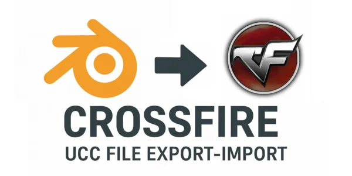
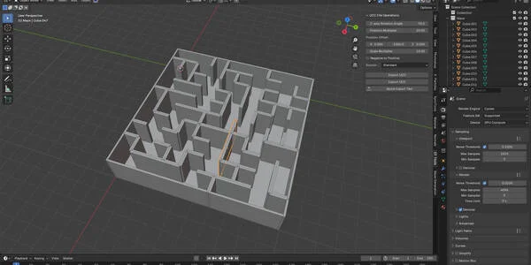
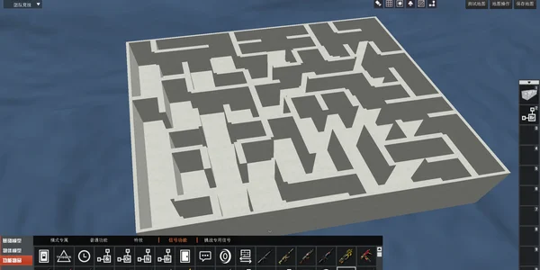
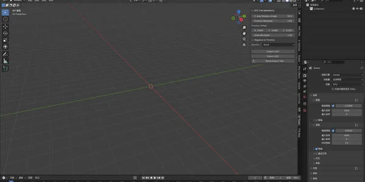
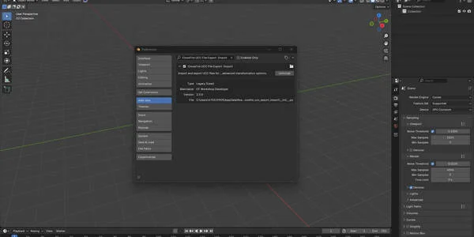
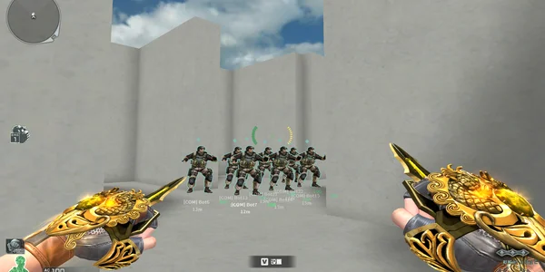

CrossFire UCC 文件 导出-导入 (.ucc)
$20.00相册







产品信息
描述
CrossFire UCC 文件 导出-导入 Blender 插件
通过这款强大的 Blender 插件改变您的 CrossFire 地图创建工作流程，专为 CrossFire 地图工坊开发者设计。
This comprehensive tool enables seamless import and export of UCC (Unreal Coordinate 容器) files, bridging the gap between Blender’s 3D modeling power and CrossFire’s engine requirements.
🎯 精确的 UCC 文件处理
导入 UCC 文件，完整保留 坐标、旋转和缩放
将 Blender 场景导出为 UCC，带有 高级变换选项
内置数据验证防止损坏并确保兼容性
🔧 高级变换控件
Z 轴旋转调整全局场景方向
位置乘数用于坐标系转换
缩放乘数自动负转正转换
位置偏移用于精确地图对齐
⚡ 简化的工作流程
快速导出测试 用于快速迭代
临时场景处理，保护您的原始工作安全
详细的日志系统 用于跟踪导出操作
批量处理 用于多个对象和大型地图
🎮 游戏就绪输出
针对 CrossFire 地图工坊集成进行了优化
保留对象命名规范
维护变换层次结构
完全兼容现有 CrossFire 工作流程
💼 适合
为 CrossFire 构建关卡的游戏设计师
使用 Blender 制作资源和布局的地图创作者
需要精确坐标转换的开发者
需要标准化、可靠导出流程的团队
此插件消除了繁琐的手动转换，让您专注于设计出色的环境。
Whether you’re crafting competitive arenas, custom game modes, or detailed architectural spaces, this tool ensures your Blender creations translate perfectly into the CrossFire engine.
安装简单，配有直观的 N 面板界面，无缝集成到 Blender 中。全面的日志记录和错误处理为您的工作流程提供可靠性和信心。
🚀 通过专业级导入/导出功能将您的 CrossFire 地图创建提升到新的水平，保证精度、性能和易用性。
文档
CrossFire UCC 文件 导出-导入 插件 文档
=================================================================
目录
1. 简介
2. 安装
3. 用户界面
4. 导入功能
5. 导出功能
6. 高级设置
7. 工作流程示例
8. 故障排除
9. 技术说明
=================================================================
1. 简介
CrossFire UCC 文件导出-导入插件是 Blender 的专用工具，实现 Blender 3D 环境与 CrossFire 地图工坊之间的无缝集成。 UCC（虚幻坐标容器）文件包含游戏对象的空间数据，包括位置、旋转、缩放和命名信息。
此插件适用于：
- 游戏关卡设计师
- CrossFire 地图创作者
- 处理坐标转换的开发者
- 需要精确导出工作流程的团队
=================================================================
2. 安装
系统要求：
- Blender 3.0.0 或更高版本
- Windows 操作系统（推荐）
安装步骤：
1. 下载插件 zip 文件
2. 打开 Blender 并前往 编辑 > 偏好设置 > 插件
3. 点击"安装..."并选择 zip 文件
4. 启用"CrossFire UCC 文件导出-导入"插件
5. 面板将出现在 3D 视口侧边栏的"CF 工具"下
=================================================================
3. 用户界面
插件界面位于：
View3D > Sidebar > CF 工具 > UCC 文件操作
主要控件：
- Z 轴旋转角度：导出时应用的全局旋转 (-360° to 360°)
- 位置乘数：坐标缩放系数 (0.1 to 1000.0)
- 位置偏移：X、Y、Z 偏移值 (-1000.0 to 1000.0)
- 缩放乘数：大小缩放系数 (0.1 to 1000.0)
- 负转正：自动转换负缩放值
- 源文件：选择快速(mf5)或标准(mf6)模板
操作按钮：
- 导入 UCC：将 UCC 文件导入 Blender
- 导出 UCC：将场景导出为 UCC 文件
- 快速导出测试：快速导出到预定义位置
=================================================================
4. 导入功能
导入 UCC 文件：
1. 点击"导入 UCC"
2. 导航到您的 UCC 文件
3. 选择文件并点击"导入 UCC"
导入流程：
- 读取对象坐标、旋转和缩放数据
- 创建包含导入数据的文本块
- 验证数据完整性（检查 NaN/无限值）
- 报告成功导入的对象数量
文本块中的数据格式：
名称：[对象名称], 位置: (x,y,z), 旋转: (x,y,z,w), 大小: (x,y,z),
坐标索引： [position], 旋转索引： [position], 大小索引： [position]
=================================================================
5. 导出功能
标准导出：
1. 使用网格对象设置场景
2. 在面板中配置导出设置
3. 点击"导出 UCC"
4. 选择保存位置和文件名
5. 查看导出日志了解详情
快速导出测试：
1. 配置您的场景
2. 选择源模板（mf5 或 mf6）
3. 点击"快速导出测试"
4. 文件导出到 ~/文档/CF系统/UCC/untitled.ucc
导出流程：
- 创建临时场景进行处理
- 围绕组合中心应用全局 Z 轴旋转
- 转换坐标系统（Blender 到 UCC）
- 应用位置和缩放乘数
- 处理负缩放转换
- 清除未使用的对象插槽
- 生成详细的操作日志
=================================================================
6. 高级设置
Z 轴旋转角度：
- 围绕所有对象的组合中心全局应用
- 用于坐标系统对齐
- 默认：90 度
位置乘数：
- 导出时缩放坐标值
- Blender 单位到 UCC 单位转换
- 默认：1.0
位置偏移：
- 为对象位置添加偏移
- X、Y、Z 轴的单独控制
- 用于地图对齐
缩放乘数：
- 导出时缩放对象大小
- 应用于所有缩放维度
- 默认：1.0
负转正转换：
- 自动将负缩放值转换为正值
- 正确处理镜像对象
- 记录哪些轴被转换
源文件选择：
- mf5（快速）：简化模板
- mf6（标准）：完整功能模板
- 模板存储在 core/ 文件夹中
=================================================================
7. 工作流程示例
基本导出工作流程：
1. 在 Blender 中创建或导入 3D 模型
2. 按需定位对象
3. 设置对象使用四元数旋转模式
4. 配置导出设置
5. 使用快速导出测试进行迭代
6. 使用标准导出进行最终输出
坐标系统转换：
- Blender 使用右手坐标系
- UCC 格式使用特定缩放（35 倍乘数）
- Z 轴旋转处理方向差异
- 位置乘数调整坐标缩放
多对象场景：
- 对象按名称字母顺序处理
- 每个对象的变换数据都被保留
- 未使用的插槽自动归零
- 最多支持约 10,000 个对象
=================================================================
8. 故障排除
常见问题：
"找不到源文件"：
- 确保 core/mf5.ucc 和 core/mf6.ucc 存在
- 检查文件权限
- 验证插件安装
"对象超出文件大小"：
- 模板容量中对象过多
- 减少对象数量或使用更大的模板
"无法创建导出目录"：
- 检查文件夹权限
- 确保有足够的磁盘空间
- 验证路径可访问性
旋转问题：
- 确保对象使用四元数旋转模式
- 插件自动转换旋转模式
- 检查复杂层次结构中的旋转顺序
缩放问题：
- 为镜像对象启用"负转正"
- 调整缩放乘数进行大小转换
- 检查零或无限缩放值
=================================================================
9. 技术说明
文件格式详情：
- UCC 文件使用二进制格式
- 每个对象固定 200 字节块
- 坐标数据：12 字节（3 个浮点数）
- 旋转数据：16 字节（4 个浮点数，四元数）
- 缩放数据：12 字节（3 个浮点数）
坐标转换：
UCC_X = Blender_X * 35 * 位置乘数
UCC_Y = Blender_Y * 35 * 位置乘数
UCC_Z = Blender_Z * 35 * 位置乘数
内存管理：
- 临时场景会自动清理
- 导出期间保留原始场景
- 文本块存储操作日志
性能注意事项：
- 大型场景（>1000 个对象）可能需要一些时间处理
- 快速导出测试针对迭代进行了优化
- 可以禁用日志记录以获得更好的性能
数据验证：
- 检查 NaN 和无限值
- 验证文件边界
- 报告数据完整性问题
=================================================================
如需支持和更新，请访问 CrossFire 开发社区。
本文档涵盖插件 2.0.0 版本。
产品文件
- crossfire_ucc_export_import.zip(1.0 KB)
- file_1.zip(148.7 KB)